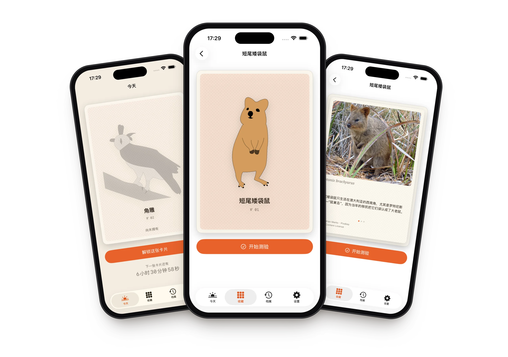
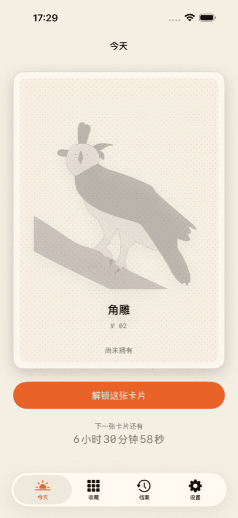
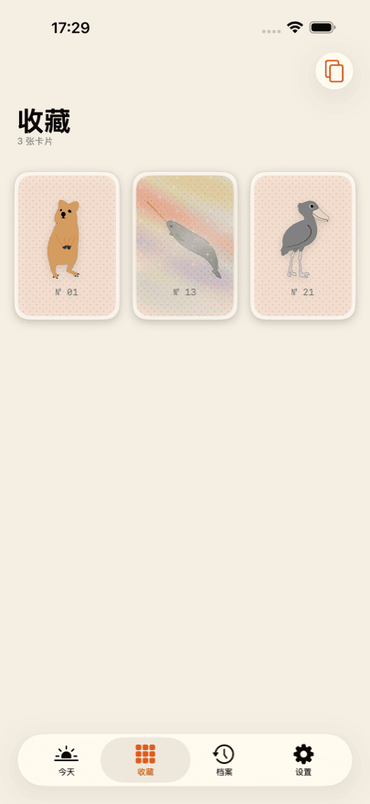
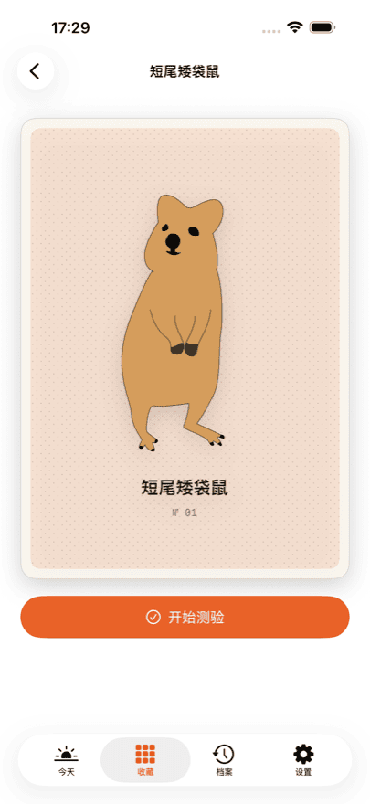
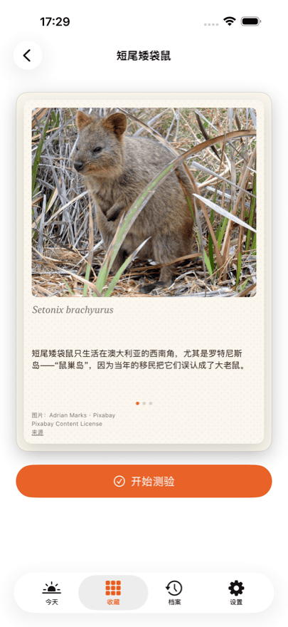
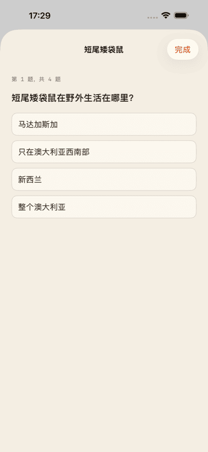

Daily Bestiary
值得收藏的稀有动物卡






你会得到
每天一张
一张，不会更多。当天的卡片按你自己的起始日计算，而不是按日历日期——什么时候开始都可以。
一张照片和三条知识
每张背面都有该动物的真实照片、三条知识和学名。
每种动物一套测验
每种动物四道题，由一位生物老师审校。随时可以重玩。
一份不断长大的收藏
相册里只有你自己的卡片。没有空位，没有“几分之几”，也没有比拼。
闪卡
有些卡片会发光：倾斜手机，光泽就会在卡面上移动。
Collector
Collector 会打开档案：错过的那一天仍然可以补回来。每天的卡片也包含在内，你还能看到整份收藏的测验统计。
Collector 是订阅，在你取消之前会自动续期。随时可以在 Apple 账户设置中取消。当前的价格和周期请以 App Store 为准，各个国家和地区并不相同。
无账号、无信息流、无广告
没有注册，也没有登录。你的收藏保存在设备上；如果你登录了 iCloud，它会在你自己的设备之间私密同步。开发者无法访问。
没有可刷的内容，也没有要肝的任务。没有广告、没有广告网络，也没有跨 App 的追踪。购买通过一家服务商处理，具体传输了什么，隐私政策里写得清清楚楚。
图片来源
卡片正面的插画为手绘。背面的照片来自可自由使用的来源——Pixabay、Unsplash 和 Wikimedia Commons。
每张照片都在自己那张卡片的背面标注了摄影者、许可协议和来源链接。不是藏在细则里，而是就在图片所在的地方。
常见问题
Daily Bestiary 收费吗？
下载免费，前三张卡片也免费——背面、知识和测验一应俱全。之后你可以单独解锁当天的卡片、购买十张装，或者订阅 Collector。当前价格请以 App Store 为准，各地并不相同。
需要注册账号吗？
不需要。没有注册、没有登录、没有个人资料。App 不会索取姓名或电子邮件地址。
一共有多少张卡片？
任何地方都没有写——App 里没有，这里也没有。写出总数，收藏就变成了进度条，而这正是我们不想要的。当你集齐现有的全部卡片时，App 会告诉你。
错过一天会怎样？
那张卡片不会消失。Collector 会打开档案，可以把错过的日子补回来。没有 Collector 的话，第二天就是下一张卡片。
iPhone 和 iPad 之间会同步吗？
会，只要两台设备用同一个 Apple 账户登录了 iCloud。同步通过你自己的私有 iCloud 数据库进行，开发者无法查看。
重装 App 后购买记录没了？
没有丢失。App 的设置里和每个购买页面上都有“恢复购买”。它会把订阅和剩余次数重新关联到你的 Apple 账户。收藏本身则通过 iCloud 回来。
如何取消 Collector？
通过 Apple 而不是 App：设置 → 你的姓名 → 订阅。可以随时取消，在当前周期结束时生效。App 设置中的 Customer Center 也通向同一个页面。
没有网络能用吗？
可以。所有卡片、照片和题目都随 App 一起提供，不会另行下载。只有购买和 iCloud 同步需要联网。